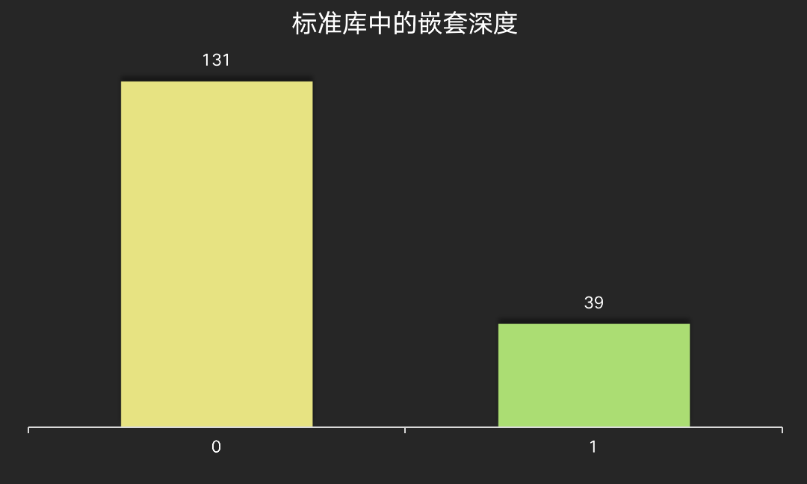

Go是静态类型的编程语言，自2009年发布以来，已经十多岁了。现在，Go广泛应用于云原生系统、微服务、web开发、运维等场景，并且在webassembly、嵌入式等也有进一步的探索。尤其在中国，Go语言越来越多的被众多公司和开发者所采用，相关的研究文章也不断的涌现，从编译器的优化、运行时的内部机制、标准库的设计、语言规范的探索、第三库的研究和应用、产品中的应用、不同语言的比较等等目不暇接。
Go是面向对象的编程语言吗？
官方FAQ给出了标准答案: Yes and No。
当然，Go有面向对象编程的类型和方法的概念，但是它没有继承(hierarchy)一说。Go语言的接口实现和其它的编程语言不一样，Go开发者的初衷就是保证它易于使用，用途更广泛。
还有一种“模拟”产生子类的方法，拿就是通过在类型中嵌入其它的类型，但是这是一种“组合”的方式，而不是继承。
没有了继承， Go语言的对象变得比C++和Java中更轻量级。
在Go语言中，接口定义了一套方法的集合，任何实现这些方法的对象都可以被认为实现了这个接口，这也称作Duck Type。这不像其它语言比如java,需要预先声明类型实现了某个或者某些接口，这使得Go接口和类型变得很轻量级，它解耦了接口和具体实现的硬绑定。显然这是Go的开发者深思熟虑的一个决定。
if something looks like a duck, swims like a duck and quacks like a duck then it’s probably a duck.
因为没有继承，你也只能通过Go接口实现面向对象编程的多态。本身Go接口在内部实现上也是一个(其实是两种,其中一种专门处理interface{})结构体,它的虚函数指向具体的类型的实现。在编译代码的时候，Go编译器还会做优化，不需要接口的时候，它会使用具体的方法来代替接口使用，这样进一步优化性能，这叫做devirtualize调用。
如果你在一个接口A中嵌入两个接口B、C， 如果B、C有相同的方法的话，编译会出错，但是Go1.14 修复了这个问题，允许嵌入的接口有重叠。
|
|
但是，结构体中嵌入多个接口如果有重叠的方法的话，编译还是会有问题，原因在于结构体在调用重叠方法的时候会迷惑，不知道改调用哪个字段上的方法，所以结构体上的方法不允许有重叠(只允许有覆盖)。
Go中的接口应用广泛，几乎所有的项目中都会用到接口。但是如何才能用好接口，或者说大家怎么使用结构的呢。本文作者调研了标准库和挑选了知名度最高的几个Go语言的应用，分析了他们的使用方法，以供参考。
首先我们会分析接口的嵌嵌入的问题，看看在接口中嵌套接口这种使用模式是否流行，并且统计嵌入的接口的数量。
再次，我们定义嵌入的深度。如果没有嵌入，我们定义嵌入深度为0,如果有嵌入，并且嵌入的接口没有嵌入的话，我们称之为深度为1,以此类推。比如下面接口A的嵌入深度为2:
|
|
又比如标准库中的io.ReadCloser它的嵌入深度为1。
嵌入深度严重影响代码的复杂度，所以本文也会分析标准库和流行应用中的接口深度的设计。
第三，我们会分析接口中定义的方法的数量，看看大家使用的接口是一个"巨大"接口还是简单的接口。因为接口中可能还会嵌入接口，我们把方法分成两类，一类是接口中直接定义的方法，我们叫“直接方法”，另外一种是通过嵌入接口中引入的方法，我们称之为"嵌入方法",这两种方法之和就是"全部方法"。
因为标准库是Go开发者自己实现的，它的风格代表着“正统的”Go语言的风格，所以我们在统计分析的时候会单独把它列出来。
另外我们分析了Docker、etcd、grpc-go、prometheus、consul、influxdb等几个Go开发的应用，统计分析他们对接口的使用情况。
嵌入的接口的数量
比如标准库中的io package中的几个接口，Reader和CLoser没有嵌入其它的接口，而ReadCloser嵌入了Reader和CLoser,所以它的嵌入数量为2。
|
|
可以看到， 绝大部分的接口(131个)都不会嵌入其它接口的，嵌入最多的是mime/multipart.File,嵌入了四个接口:
|
|
其它6个项目使用接口的情况：
可以看到同样大部分接口嵌入数量都在0个或者1个，嵌入最多的是kubernetes的CoreV1Interface接口，嵌入了16个接口，可以说是一个巨无霸嵌入接口了:
|
|
嵌入的接口深度
接口嵌入接口，嵌入的接口再嵌入接口......, 接口的深度可以很长，但是很深的接口降低了代码的可读性，提高了代码的复杂度。让我们看看标准库和精选项目中接口的深度。

标准库中不使用太深的嵌入方式，比较多的也就是嵌入一次。
精选项目中使用接口的方式也一样，很少使用嵌入深度很长的方式，最长也就是2,而且只有两个接口:kubernetes/.../Stream和moby/.../WriteCommitCloser,而且主要是因为嵌入io.ReadWriteCloser和io.WriteCloser导致。
接口中直接定义的方法的数量
接下来让我们看看接口本身的复杂度，也就是直接定义的方法的数量，不包括嵌入接口引入的方法。
标准库中接口定义的直接方法的数量都很少，不会设置很多的方法，接口都比较精巧干练，比较特殊的是reflect/Type接口，定义了31个直接方法。
同样，精选项目中的接口直接定义的方法也比较少，超过10个方法的接口少之又少，最多的是influxdata/.../TSMFile接口，定义了足足42个方法。
接口中总的方法的数量
我们把直接定义的方法和嵌入接口引入的方法加和，统计接口的总方法。
标准库中1接口的总方法数量基本都在8个以下。
精选项目中接口定义的总方法基本都在12个以下。